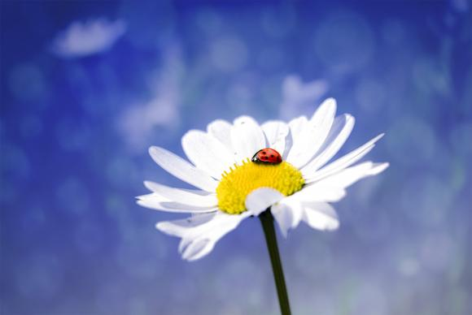
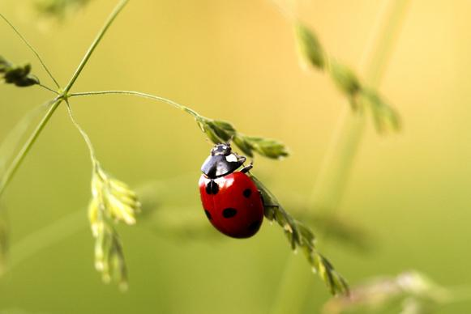
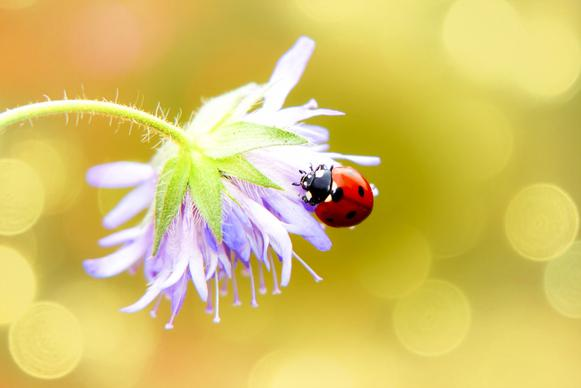
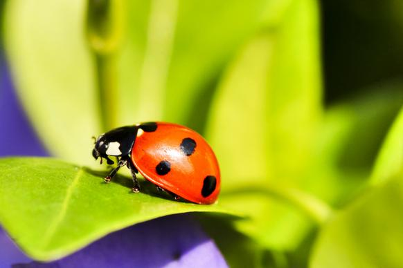
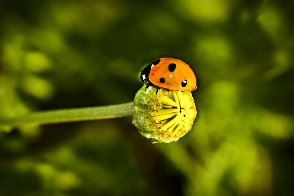
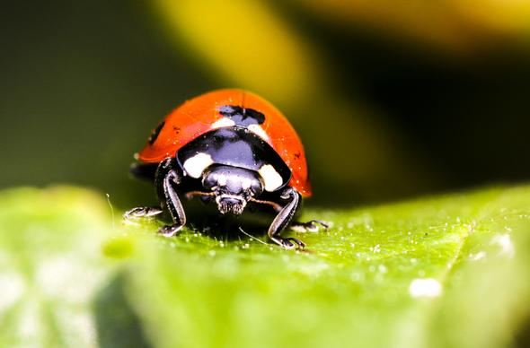
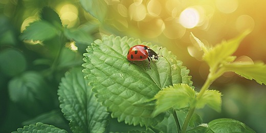

Image Gallery

Nature
Nature is an inherent character or constitution,[1] particularly of the ecosphere or the universe as a whole. In this general sense nature refers to the laws, elements and phenomena of the physical world, including life. Although humans are part of nature, human activity or humans as a whole are often described as at times at odds, or outright separate and even superior to nature.[2]

Bug
Coccinellidae is a widespread family of small beetles. Entomologists use the names ladybird beetles or lady beetles to avoid confusion with true bugs. The more than 6,000 described species have a global distribution and are found in a variety of habitats. They are oval beetles with a domed back and flat underside. Many of the species have conspicuous aposematic (warning) colours and patterns, such as red with black spots, that warn potential predators that they taste bad.

Flower
Flowers, also known as blossoms and blooms, are the reproductive structures of flowering plants. Typically, they are structured in four circular levels around the end of a stalk. These include: sepals, which are modified leaves that support the flower; petals, often designed to attract pollinators; male stamens, where pollen is presented; and female gynoecia, where pollen is received and its movement is facilitated to the egg.

Beautiful
Beauty is commonly described as a feature of objects that makes them pleasurable to perceive. Such objects include landscapes, sunsets, humans and works of art. Beauty, art and taste are the main subjects of aesthetics, one of the fields of study within philosophy. As a positive aesthetic value, it is contrasted with ugliness as its negative counterpart.

Grass
Grass refers to various families of plants. The three major families of grasslike plants are true grasses (Poaceae), sedges (Cyperaceae), and rushes (Juncaceae). Lawns and pasturelands are typically composed of true grasses, five of which cover 46% of the world's arable land: rice, wheat, maize, barley, and sugar cane

Wind
Grass refers to various families of plants. The three major families of grasslike plants are true grasses (Poaceae), sedges (Cyperaceae), and rushes (Juncaceae). Lawns and pasturelands are typically composed of true grasses, five of which cover 46% of the world's arable land: rice, wheat, maize, barley, and sugar cane

Jazz
Grass refers to various families of plants. The three major families of grasslike plants are true grasses (Poaceae), sedges (Cyperaceae), and rushes (Juncaceae). Lawns and pasturelands are typically composed of true grasses, five of which cover 46% of the world's arable land: rice, wheat, maize, barley, and sugar cane

Tree
Grass refers to various families of plants. The three major families of grasslike plants are true grasses (Poaceae), sedges (Cyperaceae), and rushes (Juncaceae). Lawns and pasturelands are typically composed of true grasses, five of which cover 46% of the world's arable land: rice, wheat, maize, barley, and sugar cane